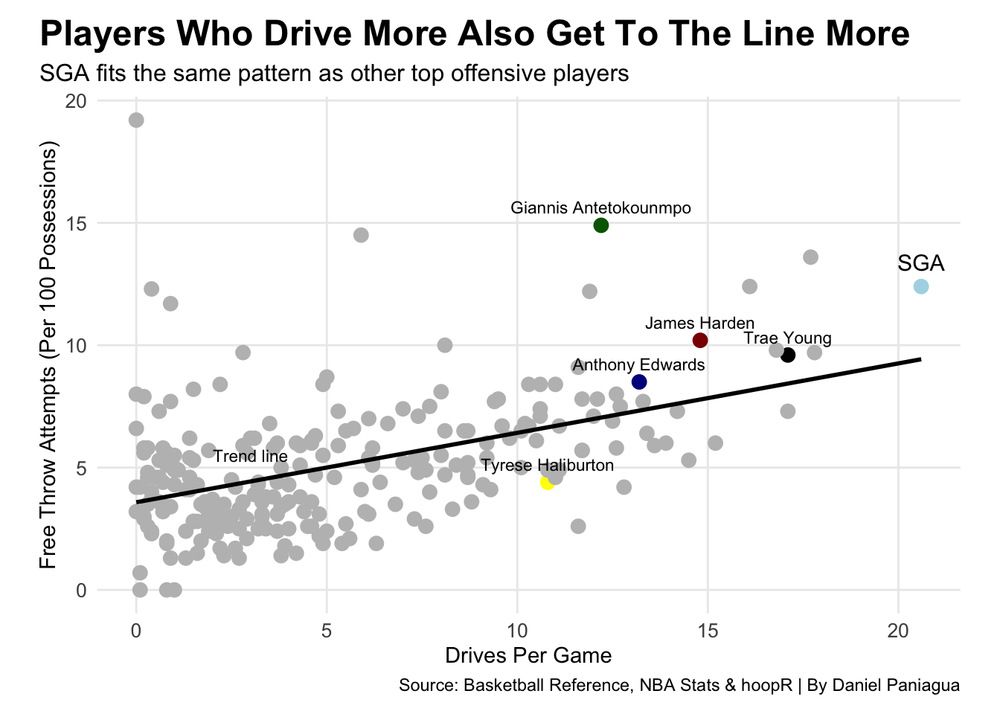
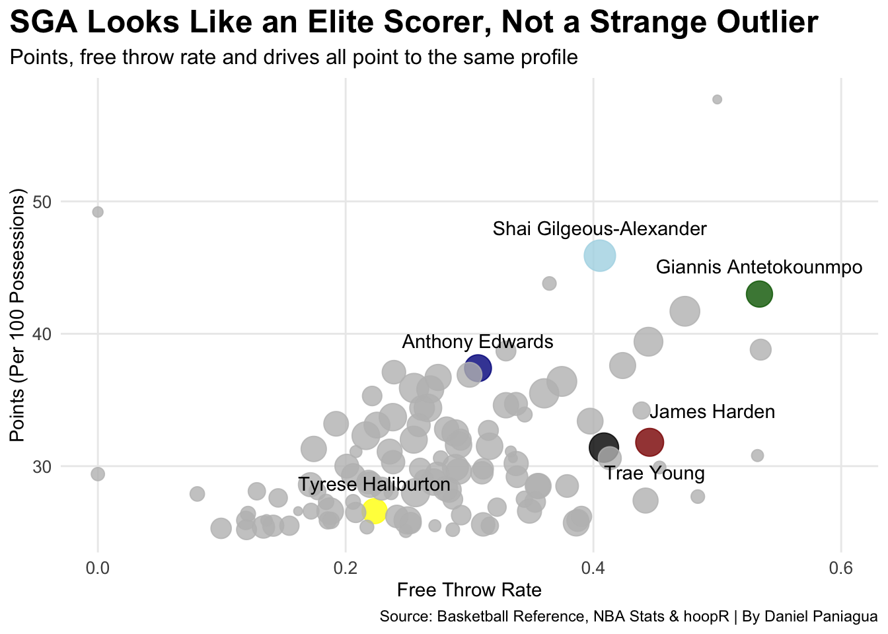

Is Shai Gilgeous-Alexander actually “foul baiting,” or is he just elite at drawing contact compared to other NBA stars?
NBA
basketball
mvp
Author
Daniel Paniagua
Published
April 10, 2026
There has been a lot of talk this season about Shai Gilgeous-Alexander and how often he gets to the free throw line. Some people argue that he is “foul baiting,” while others believe it is just a result of how he plays.
To figure this out, I wanted to look at the data and see how SGA compares to other top scorers in the NBA. More specifically, I focused on three things: free throw rate, drives to the basket, and overall scoring efficiency.
The goal was to see if SGA is actually doing something unusual, or if he just fits the profile of an elite offensive player.
The first thing I looked at was free throw rate among top NBA scorers.
This chart shows that SGA is near the top of the league in free throw rate, which explains why people think he might be foul baiting. However, he is not alone. Players like James Harden and Trae Young are also at the top and both have built reputations for getting to the line frequently.
This suggests that drawing a lot of free throws is not unique to SGA. Instead, it seems to be a common trait among elite offensive players.
Next, I wanted to understand why players get to the line so often. To do this, I compared drives per game with free throw attempts.
Code
chart2 <- top_scorers |>ggplot() +geom_point(aes(x = drives, y = free_throws_attempted, color = color_group), size =3) +geom_smooth(aes(x = drives, y = free_throws_attempted), method ="lm", se =FALSE, color ="black") +annotate("text", x =3, y =5.5 , label ="Trend line", size =3) +geom_text(data = top_scorers |>filter(player_name =="Shai Gilgeous-Alexander"),aes(x = drives, y = free_throws_attempted, label ="SGA"),vjust =-1,size =4 ) +geom_text(data = top_scorers |>filter(player_name %in%c("James Harden", "Giannis Antetokounmpo", "Anthony Edwards", "Trae Young", "Tyrese Haliburton")),aes(x = drives, y = free_throws_attempted, label = player_name),size =3,vjust =-1) +scale_color_manual(values =c("SGA"="lightblue", "Giannis Antetokounmpo"="darkgreen", "Anthony Edwards"="darkblue", "Trae Young"="black", "James Harden"="darkred", "Tyrese Haliburton"="yellow", "Other"="gray")) +labs(title ="Players Who Drive More Also Get To The Line More",subtitle ="SGA fits the same pattern as other top offensive players",x ="Drives Per Game",y ="Free Throw Attempts (Per 100 Possessions)",color ="",caption ="Source: Basketball Reference, NBA Stats & hoopR | By Daniel Paniagua" ) +theme_minimal() +theme(plot.title =element_text(size =18, face ="bold"),axis.title =element_text(size =11),axis.text =element_text(size =10),plot.subtitle =element_text(size =12),panel.grid.minor =element_blank(),plot.title.position ="plot",legend.position ="none",plot.margin =margin(10, 20, 10, 20) )chart2
`geom_smooth()` using formula = 'y ~ x'

There is a clear relationship here, players who drive to the basket more tend to get more free throws. This makes sense because attacking the rim leads to more contact and more opportunities to draw fouls.
SGA fits right into this trend. He is one of the league leaders in drives per game, and his free throw numbers match that level of aggression. When compared to players like Giannis Antetokounmpo, James Harden and Trae Young, SGA does not stand out as an outlier. Instead, he follows the same pattern.
This suggests that his free throw attempts are a natural result of his playstyle, not just foul baiting.
Finally, I combined scoring, free throw rate and drives into one chart to get a complete picture.
This chart shows that SGA is an elite scorer in every sense. He scores a high number of points, has a high free throw rate and drives to the basket frequently. More importantly, he is grouped with other elite players like Giannis and Harden.
If SGA were truly just foul baiting, you would expect him to stand out in a strange way compared to other players. Instead, he fits right in with some of the best offensive players in the league.
Code
chart3 <- bubble_data |>ggplot() +geom_point(aes(x = ftr, y = points, size = drives, color = color_group), alpha = .8) +scale_size(range =c(2, 8)) +geom_text(data = bubble_data |>filter(player_name %in%c("Shai Gilgeous-Alexander", "Giannis Antetokounmpo", "Anthony Edwards", "Tyrese Haliburton")),aes(x = ftr, y = points, label = player_name),vjust =-1.5 ) +geom_text(data = bubble_data |>filter(player_name =="Trae Young"),aes(x = ftr, y = points, label = player_name),hjust =0,vjust =1.5,nudge_y =-0.8) +geom_text(data = bubble_data |>filter(player_name =="James Harden"),aes(x = ftr, y = points, label = player_name),hjust =0,vjust =-1,nudge_y =0.8)+scale_color_manual(values =c("SGA"="lightblue","Giannis Antetokounmpo"="darkgreen","Trae Young"="black","James Harden"="darkred","Anthony Edwards"="darkblue","Tyrese Haliburton"="yellow","Other"="gray" ) ) +labs(title ="SGA Looks Like an Elite Scorer, Not a Strange Outlier",subtitle ="Points, free throw rate and drives all point to the same profile",x ="Free Throw Rate",y ="Points (Per 100 Possessions)",size ="Drives Per Game",color ="",caption ="Source: Basketball Reference, NBA Stats & hoopR | By Daniel Paniagua" ) +expand_limits(x=0.6) +theme_minimal() +theme(plot.title =element_text(size =18, face ="bold"),axis.title =element_text(size =11),axis.text =element_text(size =10),plot.subtitle =element_text(size =12),panel.grid.minor =element_blank(),plot.title.position ="plot",legend.position ="none" )chart3

Overall, the data shows that Shai Gilgeous-Alexander is not simply foul baiting. While he does get to the free throw line a lot, it is largely due to how he plays the game. He attacks the basket, creates contact and plays a high-usage offensive role, just like other elite scorers.
In the end, SGA does not look like an outlier. He looks like exactly what he is which is one of the best offensive players in the NBA.